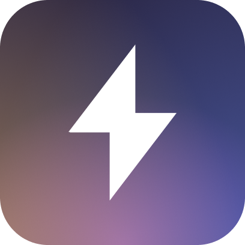

AttentionYour CRM updates itself. Your reps are coached in absentia. Any question about your process is answered in minutes.
Teams that made the switch
What teams are saying
Quotes reflect individual customer experiences. Results may vary based on use case, configuration, and team adoption. Named individuals have provided consent to be quoted.
We're basically not getting call summaries at this point... I went from a point where we had really good summaries, to I basically don't use their summaries in Gong anymore. They're not reliable. And their customer service has been pretty abysmal... There is a zero percent chance we renew with them.
One of the things that has worn on us with Gong is that the roadmap has just been very slow. We hear 'it's on the roadmap' from them — it's almost like a joke at this point.
I did the demo with the Gong guy and I asked him, can you do this? And he kept being like, 'soon, soon, it's on the roadmap'... Not good enough.
You are so far ahead of Gong.
The integration and transition from Gong to Attention was incredible. We were very concerned about losing data, losing traction, losing team alignment — and I was very impressed with how you guys were able to act fast and get everything there.
The pre-call prep — people are just blown away with some of the stuff there... relative to Gong it is much, much better.
PAINS & GAINS FROM REAL USERS
Quotes sourced by Attention's Super Agent in under 10 minutes from 400+ recorded sales conversations. Reviews marked (G2) are from the G2 software review platform.
Many report feeling roadmap promises are used to close deals, not drive delivery.
Customers report Gong's product roadmap as a recurring source of frustration. Promises of upcoming features — autofill, orchestration, advanced AI — are described as going unfulfilled for 12–18 months.
Post-sale support frequently described as inconsistent compared to the sales experience.
Many customers report that post-sale support deteriorated after contracts were signed. AE turnover is frequently cited, with customers describing a lack of consistent contacts and ongoing implementation help.
Scorecard tools are built out at many organizations but rarely adopted in day-to-day use.
Customers with non-standard sales motions report difficulty adapting Gong's coaching tools to their workflows. Scorecard adoption is described as low, with many teams having them configured but not actively using them.
Processing delays are a recurring complaint, with many users describing summaries as arriving too late to be actionable.
Multiple customers report call processing delays ranging from 8–24 hours, describing summaries as arriving too late to be useful. Some have reverted to manual note-taking as a result.
CRM auto-population reported as limited for teams with custom fields or non-standard setups.
Customers with custom CRM fields or non-Salesforce setups report that Gong's auto-population features don't meet their needs. Manual copy-paste is still required in many of these configurations.
Pricing and upsell structure cited as a frustration point, particularly relative to perceived value received.
Customers frequently cite pricing as a pain point — referencing not just base cost, but a modular upsell structure that some describe as surfacing new charges before existing issues are resolved.
Integration friction and workflow gaps reported by teams relying on multiple tools alongside Gong.
Teams using Gong alongside other tools report integration friction. Several describe needing manual workarounds to connect workflows across platforms.
"I did the demo with the Gong guy and I asked him, can you do this? He kept being like, 'soon, soon, it's on the roadmap.' Not good enough."
Jack Gashi · VP of Sales · Avoca
"One of the things that has worn on us with Gong is that the roadmap has just been very slow. We hear 'it's on the roadmap' from them — it's almost like a joke at this point."
Tony Riesen · Business Systems Leader · Dandy
"They had promised all the things I was talking about, like being able to do defaults and apply them to things. None of that happened."
David Ciano · Sales Team Lead · GovWell
"Gong has just stopped innovating. They say they have AI, but their LLM is not really... With Gong it's just roadblock after roadblock to be able to start extracting data."
Anonymous · Sales Manager · B2B SaaS
"I know it's something that Gong says is coming in like maybe the new year... I honestly don't know if this is on the roadmap or what."
Anonymous · Sales Enablement Director · SaaS
"Orchestration was supposed to drop last year. I was at [their conference], meeting with the project leads — and then they left."
Anonymous · Revenue Leader · Sales Advisory
"I still don't think they custom-fill CRM fields out of the box. You have to go in and copy and paste. I think they could have shipped something a year ago."
Anonymous · Revenue Leader · Sales Advisory
"Our AE got let go the week after we signed. They assigned us another AE — he got let go. The sales manager got assigned to us and he didn't care, because obviously it's not his own book of business. It has been a really frustrating experience."
David Ciano · Sales Team Lead · GovWell
"I didn't feel the human component of anybody who worked at that company. For a company that preaches about having the best sales process — I did not feel it."
David Ciano · Sales Team Lead · GovWell
"I really appreciated the amount of love and support we got during implementation and ongoing customization. I was very disappointed over time with how that shifted at Gong in my seven, eight years using them."
Anonymous · CRO · Tech
"The fact that you guys are there to actually support us with the prompt building, the scorecard building, the automations — that's a huge thing. Gong doesn't currently give us that level of hands-on support."
Anonymous · Sales Enablement Lead · Real Estate
"Their customer service has been pretty abysmal. They actually tried to upsell us despite some outstanding customer service issues. We have an unresolved ticket from like three months ago. There is a zero percent chance we renew with them."
David Ciano · Sales Team Lead · GovWell
"Gong doesn't currently give us that level of hands-on administrative support. It's like, 'we'll tell you how to build the problem, go for it, do it' — there is nobody there supporting us with that."
Anonymous · Sales Enablement Lead · Real Estate
"Our conversations are so nuanced that a very similar phrase could mean best practice versus worst practice. That's the piece we're missing with Gong — as much as we train the prompts, it's missing the delineation."
Anonymous · Sales Enablement Lead · Real Estate
"Gong had very kind of prepackaged deal scores — MEDDIC methodology — and our sale is very different. We have six-figure sales that happen in two weeks. The fields need to be specific to home services."
Jack Gashi · VP of Sales · Avoca
"Gong's scorecards are very surface level — yes, the thing was mentioned, or no, it wasn't. You can't make it specific to us. That's really where it lacked in what we were needing to use it for."
Anonymous · Sales Ops Leader · Tech
"In Gong, you have to have filters on the scorecard itself for which types of calls to score. It's not smart enough to know that it's a discovery call, unless the word discovery is present in the invite."
Anonymous · Revenue Intelligence Lead · SaaS
"The challenges we've had with Gong scorecards — it's just a cumulative aggregate of what a score is, and a 7 for someone could mean a totally different 7 for someone else."
Anonymous · Sales Enablement Manager · HealthTech
"Gong you have to go in and manually score... AI-suggested scores that you still need to manually apply. That means somewhere between 3 and 10% of calls get scored."
Anonymous · Sales Enablement Lead · Employee Recognition SaaS
"We've got our Gong scorecards. Do we use them? No. Are they built out? Yes. Like, they're there. Gong does coaching — it's just not very accurate."
Anonymous · Sales Manager · B2B SaaS
"We have scorecards in place. We don't have scorecards adopted. There's no impetus for managers to use them because there's not a requirement at the top level to say they should use them."
Anonymous · Sales Enablement Lead · FinTech
"We're basically not getting call summaries at this point. I went from a point where we had really good summaries to basically not using their summaries in Gong anymore. They're not reliable. They loaded at a time when I've already moved on — I've already had four more calls."
David Ciano · Sales Team Lead · GovWell
"Gong slow processing is killing them... The call transcripts for a call on Fathom show up in your inbox within seconds, not like an hour later."
Anonymous · Head of Revenue · FinTech
"Calls take like eight to 24 hours to process."
Anonymous · Revenue Leader · Marketplace
"All of the Gong summaries were a million bullet points, half of them irrelevant. And no matter how I prompted it, I could not get the irrelevant details to not show up — which meant it was completely unreliable."
David Ciano · Sales Team Lead · GovWell
"I didn't find its email follow-up summaries particularly useful... it just sort of said, 'this is the format.' That's not how I would choose to send it, and it didn't have that flexibility."
Anonymous · Sales Leader · B2B SaaS
"I couldn't trust that data versus Attention giving me that clear picture."
Anonymous · Sales Enablement Lead · Real Estate
"The Gong smart AI takes a while too. It won't spit out answers for us unless we train the system to do it, and that actually takes a lot of time upfront. I've spent hours trying to create smart trackers."
Anonymous · Sales Enablement Manager · FinTech
"Those smart trackers don't really do too much. They're neat in idea, but I'm not getting... it should be usable enough that a dummy like me can do it."
Anonymous · RevOps Manager · FinTech
"I have one rep who takes the transcript of everything from Gong, types it into ChatGPT and says 'can you make me a follow-up email?'"
David Ciano · Sales Team Lead · GovWell
"I still don't think they custom-fill CRM fields out of the box. You have to go in and copy and paste. I think they could have shipped something a year ago."
Anonymous · Revenue Leader · Sales Advisory
"We can do today using roundabout ways of ChatGPT or Gong, but having it automated and served to them versus them having to go in and manually produce that content — that's the difference."
Anonymous · Revenue Leader · FinTech SaaS
"Gong's API — I can feed that into an LLM and then pull all this myself... but I want it to just be done without me having to engineer around it."
Anonymous · Revenue Engineer · FinTech
"Like actually having it write into Salesforce for you would be huge."
Anonymous · Revenue Leader · Healthcare AI
"Gong is really expensive. I think we're spending like $150,000, $160,000 a year right now... We're almost close to the point of paying more for Gong than we do for our core CRM. It's crazy, crazy to think about, considering there are hundreds of people on Salesforce."
Anonymous · Head of Sales Ops · Large Enterprise SaaS
"We're paying for 17 licenses. We're only using like 10, and it's over a hundred dollars per month per person. We're not using any of the coaching, none of the integration with CRM — and so we know we're paying too much for what we're actually using it for."
Anonymous · Head of Operations · Tech SMB
"We pay them a lot of money... and we're not getting what we need out of it."
Anonymous · VP of Customer Success · SaaS
"I'm not looking for anything crazy, which is why I was so frustrated on why Gong is so so expensive. Because I'm like, I just need the bare sh*t."
Anonymous · Head of Sales Enablement · SaaS SMB
"If you've got a forecast seat, you have to have a standard seat — even if you don't do any call recordings. So Johan, who only looks at data for five minutes, has a forecast and a standard seat... we are all a bit frustrated that we're having to pay a lot for something that's more for senior people."
Anonymous · RevOps Lead · FinTech
"They've priced themselves out of where most of the market wants to be."
Anonymous · Revenue Leader · Sales Advisory
"The way I was thinking about it was — really all we use Gong for today is like a glorified call recorder. The reps, that's all they know. They just know Gong's recording in the background. Some do the auto email post-call, some track their deals."
Anonymous · RevOps Manager · SaaS
"Gong's API — I can feed that into an LLM and then pull all this myself... but I want it to just be done without me having to engineer around it."
Anonymous · Revenue Engineer · FinTech
"We can do today using roundabout ways of ChatGPT or Gong, but having it automated and served to them versus them having to go in and manually produce that content — that's the difference."
Anonymous · Revenue Leader · FinTech SaaS
"I actually had to custom build with n8n flows because Gong couldn't do it. Getting insights out of Gong are quite tricky — it's more keyword-based and RAG-based models."
Anonymous · RevOps Manager · SaaS
Ships fast, responds faster. Customers feel heard.
Attention's pace of innovation is consistently cited as a top differentiator. Features customers request — from live MCP integration to custom CRM workflows — ship within weeks, not quarters.
Support is a competitive advantage, not an afterthought.
Dedicated Field Deployment Engineers provide hands-on support during and after implementation. Customers describe prompt building, scorecard design, and automation workflows — all built together, not handed off.
Coaching that runs on every call, not just the ones managers remember.
Attention's AI coaching adapts to each team's specific methodology and call type. Scorecards apply automatically to 100% of calls without manager intervention — adoption rates customers say are unrecognizable vs. Gong.
Answers in minutes, not the next morning.
Summaries and transcripts are available within seconds of call completion. Customers describe asking natural-language questions across hundreds of calls as transformative for pipeline reviews and competitive intelligence.
Works with your CRM, not just the demo one.
Attention auto-populates any CRM field — standard or custom — directly from call content. Customers across Salesforce, HubSpot, and proprietary CRMs report dramatically improved data hygiene with zero manual note-taking. Deals that would have slipped through are now surfaced automatically.
You pay for what you use. It gets better without getting more expensive.
Customers switching from Gong report immediate cost relief alongside meaningful feature gains. Contract terms are flexible and sized to business need — no add-on modules, no surprise upsells.
One tool that connects to everything. No duct tape required.
Attention's integrations with Salesforce, HubSpot, Slack, and Snowflake are described as deep and reliable. Teams consolidate workflows that previously required 3–4 separate tools, with data flowing automatically.
"I was really hesitant about moving off of Gong due to product maturity, stability, and comfort with workflows. But super agent just destroys it on the AI side. Its ability to aggregate insights across offices and roll them up to an org-level narrative is really impressive. I'm seeing the light. And your responsiveness and ability to quick-ship the updates we need is huge."
Alex Caine · Revenue Leader · Dandy
"The MCP live — that's game-changing. That's huge."
Natalie York · RevOps Admin · Headway
"I don't know if this is the right place to leave positive feedback but it's genuinely shocking how good it is — as both very granular 'get me info from a specific call' stuff and super high level 'tell me about X use case' stuff."
Anonymous · Sales Rep · Parabola
"Folks have shared with me how impressed they are with your team's support and responsiveness — and speed! — with feature requests. We're bullish on Attention — keep it up!"
Keon Garvin · Business Systems Leader · Dandy
"The new feature development is actually productive."
Jennifer R. · RevOps Manager · Mid-Market SaaS
"I would also just say — genuinely the customer service we've experienced with you guys has been really great. I think that you've been very attentive to us, and even on the contracting side I think it went really smoothly."
Callie Minafo · RevOps Project Lead · Headway
"I Slacked Noah — hey we wanna get this active in our instance — and within like two days we were like, it's there. The speed is really impressive."
Natalie York · RevOps Admin · Headway
"The team at Attention is highly responsive and helpful. I never have to wait long to engage with them. Responses are friendly, professional, and nearly always resolve our requests. Integrations work beautifully."
Jennifer R. · RevOps Manager · Mid-Market SaaS (G2)
"Today we had our first weekly call without much to discuss and ended early. Operations have stabilized and we're in a good spot. A massive thank you for your dedicated support these last few months."
Keon Garvin · Business Systems Leader · Dandy
"I was impressed with the hands-on support from Attention's team during our initial setup, which made the experience smooth and engaging."
Spencer M. · Sales Leader · Mid-Market SaaS (G2)
"Attention also is making grading calls SO easy. Gong sucks."
Jess Wayne · Sales Manager · Headway
"I had this one person who was really struggling, and the manager was like, 'I don't have time to listen to her calls.' So I said, give me the top three things she's doing well and the top three things where she could use improvement. It gave me a whole list — a star chart. It was really spot on."
Anonymous · Sales Enablement Manager · Localization Services
"Attention turns every call into coaching and deal momentum. It pulls real deal intelligence from calls, highlights the exact moments that move opportunities forward, and turns 1:1s into repeatable coaching with scorecards I can track over time."
Lucas T. · Enterprise Sales Manager · Mid-Market SaaS (G2)
"I can customize every aspect of how it grades our conversations and select the data and metrics I want to pull. We can program it to coach our sales reps on each conversation — not just the ones our sales team leads review — and tailor the coaching to specifically what we're looking for, not just a template."
Spencer M. · Sales Leader · Mid-Market SaaS (G2)
"We have been talking a ton about coaching and reflexive feedback. This fits really well with the methodology and process we've already been doing with the team. And now they get real-time feedback — it works really well."
Anonymous · Sales Leader · Staffing & Recruitment SaaS
"It's genuinely shocking how good it is — as both very granular 'get me info from a specific call' stuff and super high level 'tell me about X use case' stuff."
Anonymous · Sales Rep · Parabola
"The MCP live — that's game-changing. That's huge."
Natalie York · RevOps Admin · Headway
"We constantly get questions like — tell us everything we learned last week about X. Now we can just ask. All those calls are recorded, there's no reason to have to get that data by jumping on team calls anymore."
Anonymous · Revenue Leader · FinTech
"Instead of having to go to Salesforce and find the close lost and try to connect it together — Attention can do it in less than two minutes."
Anonymous · Sales Enablement Lead · Real Estate
"The AI CRM fill is relatively accurate depending on prompting. The pre-call prep — people are just blown away with some of the stuff there. Relative to Gong it is much, much better."
Eric Black · RevOps Leader · Headway
"It extracts dozens of CRM fields from my calls and automatically syncs them to Salesforce, saving me hours of manual note-taking every week."
Joseph B. · Account Executive · Large Enterprise (G2)
"It honestly feels like it's uncovering 'fallen through the cracks' opportunities that I wouldn't have found just manually working Salesforce — accounts that have mentioned software pain but never progressed. Just really prioritizing ICP real conversation signals instead of just activity."
Kent Tamayo · Sales Leader · Rematter
"Pain points, decision criteria, competitive intel, and next steps get logged without me typing notes."
Lucas T. · Enterprise Sales Manager · Mid-Market SaaS (G2)
"I have to say we got a few new tools and the only one everyone likes is Attention."
Jess Wayne · Sales Manager · Headway
"Their contract terms are excellent. They are confident in their product so they don't lock you in, and they size the contract to meet your business needs on a monthly basis. Overall I am a huge advocate and 100% would buy again."
Jennifer R. · RevOps Manager · Mid-Market SaaS (G2)
"It was almost like we were paying for very expensive conversation intelligence tooling that wasn't really leveraged or maintained properly. So we moved to a much lower maintenance, low-touch solution."
Anonymous · Revenue Leader · Large Enterprise Consumer
"Attention is probably the most useful add-on to our core tech stack I've purchased. Outside of our critical systems, it provides daily value and insights for our sales and leadership."
Jennifer R. · RevOps Manager · Mid-Market SaaS (G2)
"It's been great so far. We migrated basically all of our Rattle workflows into Attention — and the platform does exactly what I need it to do."
Anonymous · Revenue Ops · PropTech AI
"The integration and transition from Gong to Attention was incredible. We were very concerned about losing data, losing traction, losing team alignment — and I was very impressed with how you guys were able to act fast."
Callie Minafo · RevOps Project Lead · Headway
"The integration with tools like our CRM, HubSpot, and Slack is also great, as it helps us receive summaries and flags important deals, making our team more proactive."
Spencer M. · Sales Leader · Mid-Market SaaS (G2)
"We constantly get questions like — tell us everything we learned last week about X. Now we can just ask. All those calls are recorded, there's no reason to have to get that data by jumping on team calls anymore."
Anonymous · Revenue Leader · FinTech
"The ability for the integration with Snowflake has already made our life easier."
Callie Minafo · RevOps Project Lead · Headway
"Instead of having to go to Salesforce and find the close lost and try to connect it together — Attention can do it in less than two minutes."
Anonymous · Sales Enablement Lead · Real Estate
15 minutes to prove why you should drop Gong and
Book a DemoSwitching stories
"The integration and transition from Gong to Attention was incredible. We were very concerned about losing data, losing traction, losing team alignment — and I was very impressed with how you guys were able to act fast and get everything there."
"The pre-call prep — people are just blown away with some of the stuff there... relative to Gong it is much, much better."
"Blew Gong off the map, which we expected. So kudos to you there... This has been like a massive upgrade from Gong in like a million different ways."
Your CRM updates itself. Your reps are coached in absentia. Any question about your process is answered in minutes.1
This is life with Attention.